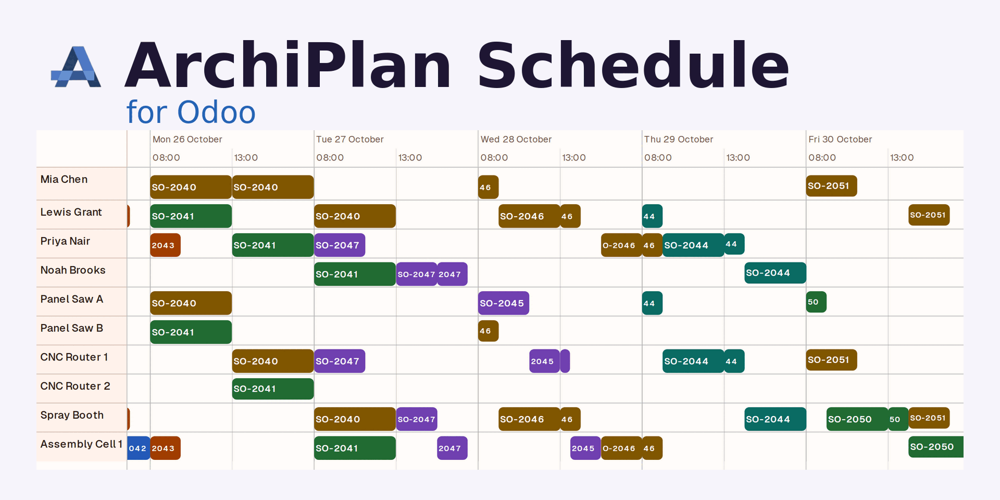
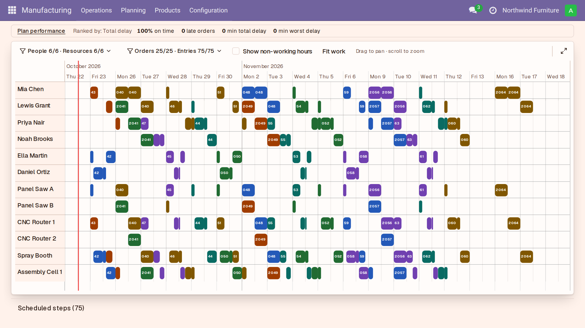
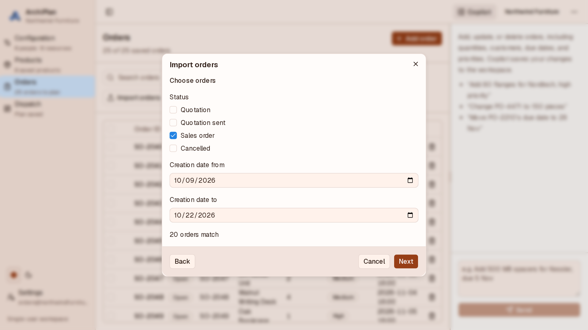
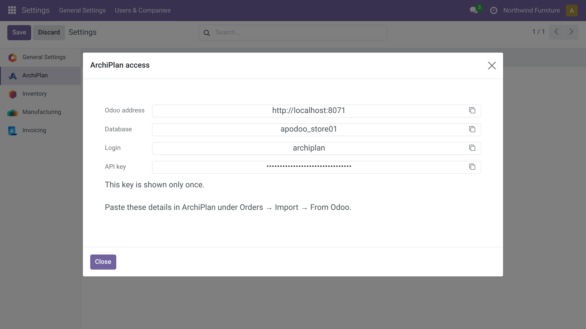
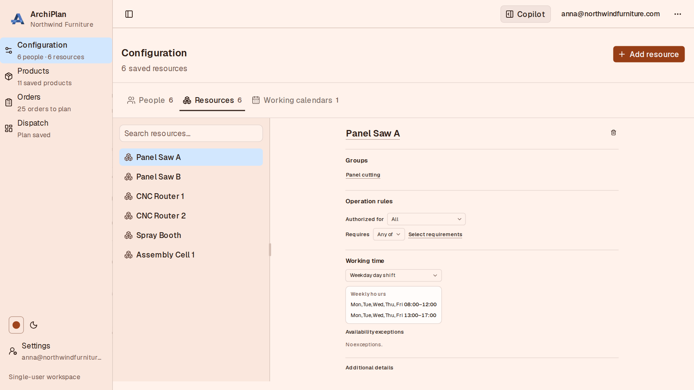
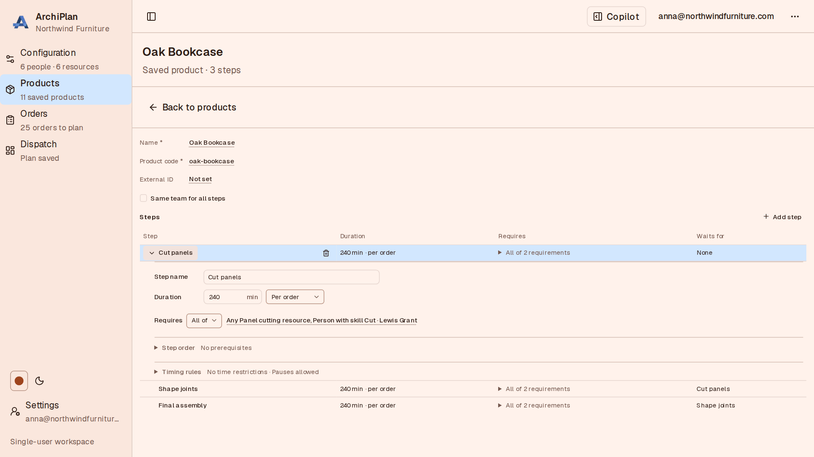

Import Odoo sales orders into ArchiPlan, plan people and machines, and review production schedules in Manufacturing.


Open Manufacturing → Planning → ArchiPlan Schedule to see 25 orders and 75 scheduled steps across the Oct 23–Nov 17 work window with plan performance KPIs.
Select SO-2041 to follow its linked steps and inspect start, finish, and on-time status.

Zoom to Oct 26–28 to inspect hourly order labels and the selected SO-2041 sequence across resource rows.

Filter Odoo sales orders by status and creation date to confirm 20 matching orders before importing.

Review 20 Odoo sales order rows with customer references, products, and quantities before importing.

Open the ArchiPlan access wizard in Odoo Settings to review connection values with the API key masked.

Ask Copilot to add three furniture products and see its saved products in the workspace list.

Select Panel Saw A to review its machine group, operation rules, and weekday working hours.

Open Oak Bookcase and expand Cut panels to inspect its duration, resource and skill requirements, and step timing rules.
Learn more at archiplan.io · Privacy policy